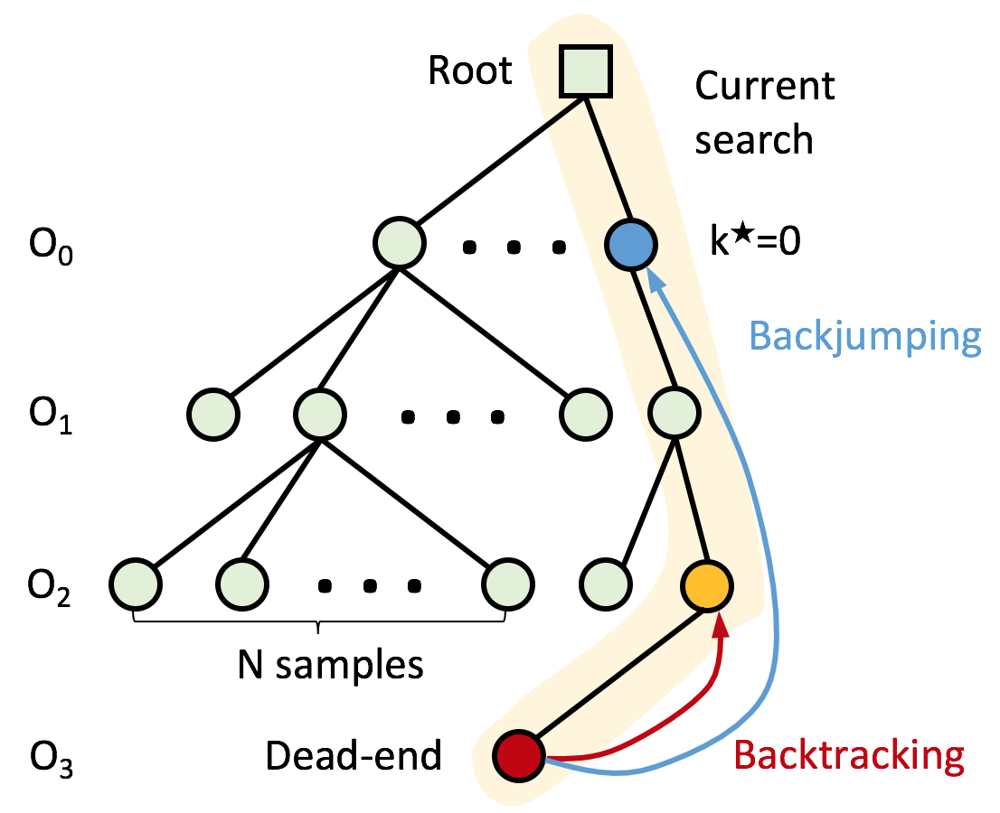
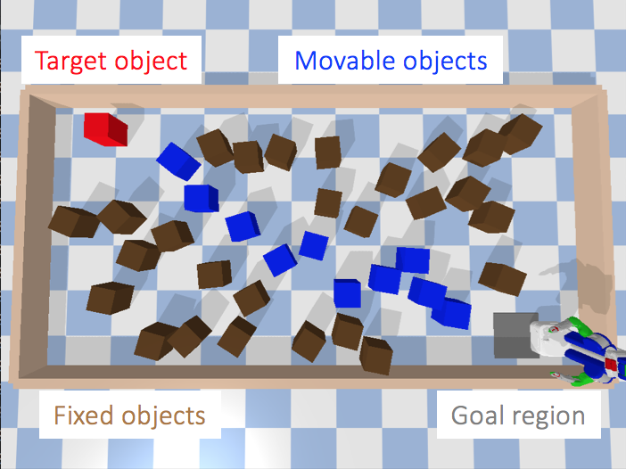

I am a PhD student in ECE at the University of Texas at Austin, advised by Prof. Peter Stone. My research focuses on the intersection of causality and decision-making (mostly reinforcement learning).
Previously, I completed my M.S. in CS at Columbia University, advised by Prof. Peter Allen and Prof. Itsik Pe’er, and my undergraduate studies at the University of Michigan - Ann Arbor.
A unsupervised skill discovery method that induces diverse interactions between state factors, which are often more valuable for solving downstream tasks.
A method for learning disentangled skills where each skill component only affects one factor of the state space, so skills can be efficiently reused to solve downstream tasks.
Improve exploration by visiting states where the agent is uncertain whether (as opposed to how) entities such as the agent or objects have some influence on each other.
Learn the causal relationships in the dynamics and reward functions for each task to derive a minimal, task-specific abstraction.


Learning to Correct Mistakes: Backjumping in Long-Horizon Task and Motion Planning Yoonchang Sung*,
Zizhao Wang*,
Peter Stone CoRL, 2022
paper
When task and motion planning search reaches dead-ends due to an early action, we identify and backjump to the culprit action to resample it, improving the search efficiency compared to backtracking.
Learn a theoretically proved causal dynamics model that removes unnecessary dependencies between state variables and the action, so it generalizes well to unseen states.
A novel variational inference framework for nonlinear hidden Markov models.
Teaching and Services
Organizer of Causality for Robotics Workshop at IROS 2023
Reviewer for NeurIPS, ICML, IROS, ICRA, and RA-L
Teaching assistant for Reinforcement Learning (CS 394R), Causality and Reinforcement Learning (ECE 381V), and Artificial Intelligence (CS 343).